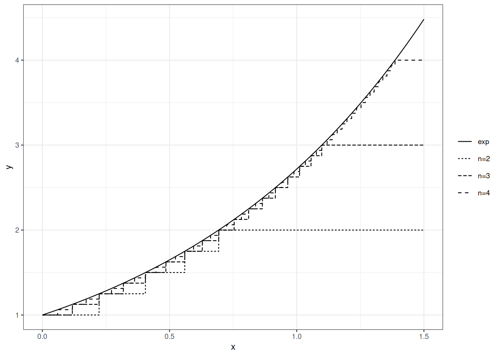

3 Un minimum d’intégration
3.1 Feuille de route
Nous commençons par passer en revue les définitions et résultats de base de la théorie de l’intégration. Nous suivons l’approche de la théorie de la mesure. D’abord, nous définissons les fonctions simples, une sous-classe de fonctions mesurables par morceaux dans Section 3.2). Définir l’intégrale d’une fonction simple par rapport à une mesure dans Section 3.3) est direct. Un peu plus de travail nous permet d’obtenir des propriétés utiles : linéarité, monotonie, pour n’en citer que quelques-unes. Dans Section 3.3), nous définissons l’intégrale d’une fonction mesurable non négative comme une borne supérieure d’intégrales de fonctions simples. Cette définition est théoriquement solide et elle se prête aux calculs. La Section 3.4) énonce trois théorèmes de convergence culminant avec le théorème de convergence dominée.
3.2 Fonctions simples
L’intégrale d’une fonction mesurable à valeurs dans \(\{0,1\}\) par rapport à une mesure \(\mu\) est définie par \[\int_{\Omega} f \mathrm{d}\mu = \mu\Big(f^{-1}(\{1\})\Big) \, ,\] ou encore \[\int_{\Omega} \mathbb{I}_A \mathrm{d}\mu = \mu(A) \qquad \text{for any measurable set } A\,.\] L’étape suivante consiste à définir l’intégrale des combinaisons linéaires finies de fonctions mesurables à valeurs dans \(\{0,1\}\).
Une fonction simple définit une partition de \(\Omega\) en un nombre fini de classes mesurables. La fonction simple est constante sur chaque classe.
Si \(f\) est une fonction simple, alors la \(\sigma\)-algèbre \(f^{-1}(\mathcal{B}(\mathbb{R}))\) est finie.
Les fonctions simples sont des combinaisons linéaires finies de fonctions indicatrices d’ensembles.
- Pour chaque \(A \in \mathcal{F}\), \(\mathbb{I}_A\) est simple
- Pour toute collection finie \(A_1, \ldots, A_n\) de sous-ensembles mesurables de \(\Omega\), toute suite \(c_1, \ldots, c_n\) de nombres réels, \(\sum_{i \leq n} c_i \mathbb{I}_{A_i}\) est une fonction simple
- Pour toute fonction mesurable \(f: \Omega \to \mathbb{R}\) et tout \(n \in \mathbb{N}\), la fonction \(g_n\) définie par \[g_n(\omega) = n \wedge (-n \vee \lfloor f(\omega) \rfloor)\] est simple.
La définition de l’intégrale d’une fonction simple par rapport à une mesure est directe : c’est une somme finie.
Notez que si la mesure \(\mu\) n’est pas finie, l’intégrale d’une fonction simple non négative peut être infinie.
Si \(\mu(A_i)=\infty\) et \(f_i=0\), nous convenons que \(f_i \mu(A_i) =0\).
Pour les fonctions simples à signe, il suffit de remarquer que si \(f\) est simple, il en est de même de \((f)_+\) et \((f)_-\) et de définir \(\int_\Omega f \mathrm{d}\mu\) par \[\int_\Omega (f)_+ \mathrm{d}\mu - \int_\Omega (f)_- \mathrm{d}\mu\] pourvu qu’au moins l’un des deux termes soit fini.
Bien qu’elles soient simples, les fonctions simples ont d’intéressantes capacités d’approximation. Toute fonction mesurable non négative peut être approchée par le bas par des fonctions simples non négatives.
Preuve. Définissons \(f_n\) par \[ f_n(\omega) = n \wedge \Big(2^{-n} \big\lfloor 2^n f(\omega) \big\rfloor \Big) \, .\] Comme \[\big\lfloor 2^n f(\omega) \big\rfloor \leq 2^n f(\omega)\] nous avons \(f_n(\omega)\leq f(\omega)\) pour tout \(\omega\).
L’image de la fonction \(f_n\) est \(i \times 2^{-n}\) pour \(i=0, \ldots, n \times 2^n\). Pour chaque \(i \in 0, \ldots, (n-1) \times 2^n\)
\[f_n^{-1}\Big(\{i \times 2^{-n}\}\Big) =f^{-1}\Big(\Big[\frac{i}{2^n}, \frac{i+1}{2^n}\Big)\Big)\]
qui appartient à \(\mathcal{F}\) car \(f\) est mesurable et \(\Big[\frac{i}{2^n}, \frac{i+1}{2^n}\Big) \in \mathcal{B}(\mathbb{R})\).
De même \(f_n^{-1}\Big(\{n\}\Big) =f^{-1}\big(\big[n, \infty\big)\big)\) appartient à \(\mathcal{F}\).
Pour vérifier que \(f_n \leq f_{n+1}\), nous considérons deux cas.
- \(f_{n+1}(\omega)\geq n\). Cela implique \(f(\omega)\geq n\) et donc \(f_n(\omega)=n <f_{n+1}(\omega)\)
- \(f_{n+1}(\omega) = k + i 2^{-n-1}\) pour \(k<n\) et \(i<2^{n+1}\). Cela implique \(f_{n}(\omega) = k + \lfloor i/2\rfloor 2^{-n} \leq f_{n+1}(\omega)\).
Enfin, si \(f(\omega) \leq n\), \(0 \leq f(\omega) - f_n(\omega) \leq 2^{-n}\). Cela implique que \(\lim_n f_n(\omega)=f(\omega)\) pour tout \(\omega\).
La figure Figure 3.1 illustre les capacités d’approximation des fonctions simples.
3.3 Intégration
Soit \(\mathcal{S}_+\) l’ensemble des fonctions simples non négatives sur \((\Omega, \mathcal{F})\).
Si la borne supérieure est finie, la fonction est dite intégrable par rapport à \(\mu\), ou \(\mu\)-intégrable.
Démontrer la Proposition Proposition 3.5.
Démontrer la Proposition Proposition 3.6.
L’intégrale d’une fonction mesurable à signe est définie par un argument de décomposition. Soit \(f\) une fonction mesurable et \(f= (f)_+ - (f)_-\). Alors
\[ \int_{\Omega} f \mathrm{d}\mu = \int_{\Omega} (f)_+ \mathrm{d}\mu - \int_{\Omega} (f)_- \mathrm{d}\mu \]
pourvu qu’au moins l’une des intégrales \(\int_{\Omega} (f)_+ \mathrm{d}\mu\) et \(\int_{\Omega} (f)_- \mathrm{d}\mu\) soit finie.
3.4 Théorèmes limites
Dans cette section, les fonctions mesurables sont à valeurs réelles, et \(\mathbb{R}\) est muni de la \(\sigma\)-algèbre borélienne (\(\mathcal{B}(\mathbb{R})\)).
Les théorèmes Théorème 3.1, Théorème 3.2, Théorème 3.3 ci-dessous sont les trois piliers du calcul intégral.
La preuve du théorème de convergence monotone se réduit à la définition d’une mesure positive et à la propriété \(\mu(\lim_n \uparrow A_n)= \lim_n \uparrow \mu(A_n)\).
Preuve. Définissons la fonction \(f\) par \(f(\omega)=\lim_n \uparrow f_n(\omega)\) pour tout \(\omega \in \Omega\). Notez que si \(f(\omega)=0\), alors \(f_n(\omega)=0\) pour tout \(n\in \mathbb{N}\).
La fonction \(f\) est mesurable positive. Pour prouver le théorème de convergence monotone, il suffit de vérifier que, pour toute fonction simple non négative \(g\) telle que \(g \leq f\) partout, pour tout \(a\in [0, 1)\), on ait :
\[ a \int g \, \mathrm{d} \mu \leq \lim_n \uparrow \int f_n \, \mathrm{d}\mu \,. \tag{3.1}\]
Pour chaque \(n \in \mathbb{N}\), définissons
\[E_n = \Big\{ \omega : f_n(\omega) \geq a g(\omega)\Big\}.\]
Notez que, comme \((f_n)_n\) est croissante, la suite \((E_n)\) est croissante. De plus, si \(f(\omega)>0\), comme \(\lim_n \uparrow f_n(\omega)=f(\omega) > a f(\omega) \geq a g(\omega)\). Pour tout \(\omega \in \Omega\), \(\mathbb{I}_{E_n}(\omega)=1\) pour tout \(n\) assez grand (attention, il n’y a pas de garantie d’uniformité). Nous avons
\[\lim_n \uparrow E_n = \Omega\, .\]
En combinant ces remarques, nous avons pour tout \(n\), \(\mathbb{I}_{E_n} a g \leq f_n\) partout. La monotonie de l’intégration entraîne, pour tout \(n\),
\[\int \mathbb{I}_{E_n} a g \,\mathrm{d}\mu \leq \int f_n \,\mathrm{d}\mu \qquad\forall n\, .\]
Maintenant, pour chaque \(n\), \(\mathbb{I}_{E_n} a g\) est une fonction simple non négative, et la suite \((\mathbb{I}_{E_n} a g)_n\) est une suite croissante de fonctions simples non négatives convergeant vers la fonction simple \(ag\).
Soit \(g = \sum_{i \leq k} c_i \mathbb{I}_{A_i}\) où \((A_i)_{i\leq k}\) est une partition finie de \(\Omega\) en sous-ensembles mesurables.
\[\mathbb{I}_{E_n} g = \sum_{i \leq k} c_i \mathbb{I}_{A_i \cap E_n} \, .\]
D’où
\[ \begin{array}{rl} \int \mathbb{I}_{E_n} a g\, \mathrm{d}\mu & = \sum_{i \leq k} c_i \int \mathbb{I}_{A_i \cap E_n}\, \mathrm{d}\mu \\ & = \sum_{i \leq k} c_i \mu(A_i \cap E_n) \, . \end{array} \]
Pour chaque \(i \leq k\), nous avons \(\lim_n \uparrow c_i \mu(A_i \cap E_n) = c_i \mu(A_i)\). Nous avons :
\[ \int \lim_n \uparrow \mathbb{I}_{E_n} a g \,\mathrm{d}\mu = \lim_n \uparrow \int \mathbb{I}_{E_n} a g \, \mathrm{d}\mu \, . \]
Cela prouve que Équation 3.1 est vérifiée pour tout \(a\in [0,1)\) et \(g \in \mathcal{S}_+\) avec \(g \leq f\) :
\[\forall g \in \mathcal{S}_+ \text{ with } \forall a \in [0,1),\]
L’hypothèse de non-négativité sur \(f_n\) n’est pas nécessaire. Il suffit de supposer \(\int f_1 \mathrm{d}\mu > - \infty\). Le démontrer.
Soit \((f_n)_n\) une suite décroissante de fonctions mesurables non négatives. Soit \(f = \lim_n \downarrow f_n\) (vérifier l’existence de \(f\)).
Est-il vrai que \(\int \lim_n \downarrow f_n \mathrm{d}\mu = \lim_n \downarrow \int f_n \mathrm{d}\mu\) ?
Répondre à la même question en supposant \(\int f_1 \mathrm{d}\mu < \infty\).
Répondre à la même question si \(\mu\) est supposée être une loi de probabilité.
Preuve. Définissons \(h_n(\omega) = \inf_{m\geq n} f_n(\omega)\). Chaque \(h_n\) est aussi non négative et mesurable. Par monotonie, \[\int h_n \mathrm{d}\mu \leq \inf_{m\geq n} \int f_m \mathrm{d}\mu \, .\]
La suite \(h_n\) est croissante. Et \(\lim \uparrow h_n(\omega) = \liminf f_n(\omega)\) pour tout \(\omega \in \Omega\). Pour chaque \(n\), par le théorème de convergence monotone (Théorème 3.1) :
\[\int \lim_n \uparrow h_n \mathrm{d}\mu = \lim_n \uparrow \int h_n \mathrm{d}\mu\]
donc \[\int \liminf_n f_n \mathrm{d}\mu = \lim_n \uparrow \int h_n \mathrm{d}\mu\]
et \[\int \liminf_n f_n \mathrm{d}\mu \leq \lim_n \inf_{m\geq n} \int f_m \mathrm{d}\mu = \liminf_{n} \int f_n \mathrm{d}\mu\]
Preuve. Vérifions d’abord que \(f\) est intégrable.
Observez que \(\lim_n |f_n| = |f|\) et donc \(\liminf |f_n| = |f|\).
Par Théorème 3.2,
\[ \int |f| \mathrm{d}\mu = \int \liminf_n |f_n| \mathrm{d}\mu \leq \liminf_n \int |f_n| \mathrm{d}\mu = \int |g| \mathrm{d}\mu < \infty \,. \]
Définissons maintenant \(h_n = \inf_{m\geq n} f_m\) et \(j_n = \sup_{m \geq n}f_m\). Nous avons \(\lim_n \uparrow h_n = f\) et \(\lim_n \downarrow j_n=f.\)
Notez aussi que
\[\int h_n \mathrm{d}\mu \leq \int f \mathrm{d}\mu \leq \int j_n \mathrm{d}\mu \, .\]
Par convergence monotone, \(\int h_n \mathrm{d}\mu \uparrow \int f\mathrm{d}\mu\) et \(\int j_n \mathrm{d}\mu \downarrow \int f\mathrm{d}\mu\). Il en découle que \(\lim \int f_n \mathrm{d}\mu\) existe et coïncide avec \(\int f \mathrm{d}\mu\).
Soit \(g: \Omega \times \mathbb{R} \to \mathbb{R}\) une fonction de deux variables telle que, pour chaque \(t \in \mathbb{R}\), \(g(\cdot, t)\) soit mesurable. Supposons que, pour chaque \(t \in \mathbb{R}\), \(g(\cdot, t)\) soit \(\mu\)-intégrable et que, pour chaque \(\omega \in \Omega\), \(g(\omega, \cdot)\) soit dérivable. Définissons \(G(t)= \int_{\Omega} g(\omega, t) \mathrm{d}\mu(\omega)\).
\(G\) est-elle toujours dérivable en tout \(t\) ?
Donner des conditions suffisantes pour que \(G\) soit dérivable et
\[G'(t) = \int \frac{\partial g}{\partial s}(\omega, s)_{|s=t} \mathrm{d}\mu(\omega) \, .\]
3.5 Lois de probabilité définies par une densité
Preuve. Le fait que \(\nu(\emptyset)=0\) est immédiat.
Le fait que \(\nu\) soit \(\sigma\)-additive découle du théorème de convergence monotone (Théorème 3.1).
Si \(A_1, \ldots, A_n, \ldots\) est une collection d’ensembles mesurables deux à deux disjoints,
\[ \begin{array}{rl} \nu(\cup_n A_n) & = \int \mathbb{I}_{\cup_n A} f \, \mathrm{d}\mu \\ & = \int \Big(\lim_n \sum_{k\leq n}\mathbb{I}_{A_k}\Big) f \, \mathrm{d}\mu \\ & = \int \Big(\lim_n \sum_{k\leq n}\mathbb{I}_{A_k} f \Big) \, \mathrm{d}\mu \\ & = \lim_n \sum_{k\leq n} \int \mathbb{I}_{A_k} f \, \mathrm{d}\mu \\ & = \lim_n \sum_{k\leq n} \int \mathbb{I}_{A_k} f \, \mathrm{d}\mu \\ & = \lim_n \sum_{k\leq n} \nu(A_k) \\ & = \sum_{k=1}^\infty \nu(A_k) \, . \end{array} \]
La quatrième égalité est justifiée par le théorème de convergence monotone ; les autres égalités découlent du fait que nous traitons des séries non négatives.
Soit \((A_n)_n\) tel que \(A_n \in \mathcal{F}, \mu(A_n)<\infty\) pour chaque \(n\) et \(\cup_n A_n = \Omega\). Pour chaque \(n\), nous avons \(\nu(A_n) = \int_{A_n} f \,\mathrm{d}\mu \leq \int_{\Omega} f \,\mathrm{d}\mu < \infty\). Cela prouve que si \(\mu\) est \(\sigma\)-finie, il en est de même de \(\nu\).
3.6 Remarques bibliographiques
Dudley (2002) offre un traitement autonome et approfondi de la théorie de la mesure et de l’intégration avec la théorie des probabilités à l’esprit.
Hiriart-Urruty & Lemaréchal (1993) est une excellente référence accessible sur la convexité.
Dudley, R. M. (2002). Real analysis and probability (Vol. 74, p. x+555). Cambridge: Cambridge University Press.
Hiriart-Urruty, J.-B., & Lemaréchal, C. (1993). Convex analysis and minimization algorithms. I (Vol. 305, p. xviii+417). Springer-Verlag, Berlin.